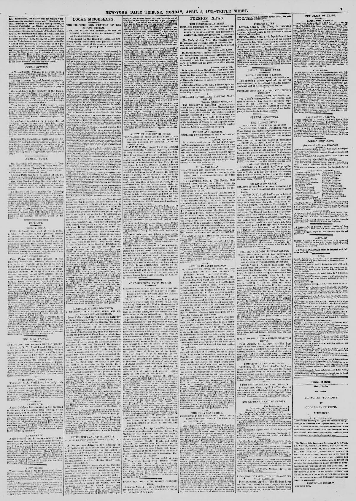

Sugar, Debt, and StrongmenAzúcar, deuda y caudillos
The recordsLos registros
In a column of foreign telegraphic intelligence, the Iowa Voter reports
In a column of foreign telegraphic intelligence, the Iowa Voter reports a dispatch from San Domingo, received via Havana, stating that a general whose name is printed in garbled type as "Ignacea Bousalce" has been elected President of the Dominican Republic. According to the same report, it is announced that the new Dominican administration will probably endeavor to annul the existing lease (printed in garbled characters as the "Uunm y leaae").
En una columna de noticias telegráficas del exterior, el Iowa Voter recoge un despacho procedente de Santo Domingo, recibido vía La Habana, según el cual un general cuyo nombre aparece impreso de forma ilegible como «Ignacea Bousalce» ha sido elegido presidente de la República Dominicana. De acuerdo con el mismo informe, se anuncia que la nueva administración dominicana probablemente procurará anular el arrendamiento vigente (impreso con caracteres corruptos como «Uunm y leaae»).
From San Domingo, via Havana, it is re ported that (ieiu'.al
A dispatch from Penang, on the 30th, announces that the Dutch troops had occupied both banks of the river running through Acheen, and the Sultan, seeing defeat inevitable, had given in his submission to the Dutch commander. From San Domingo…
Under the headline "The Black and Tan Republic," an editorial
Under the headline "The Black and Tan Republic," an editorial paragraph in The New York Herald remarks sarcastically that its "friend and ally, the noble Baez," who had wanted to sell out his shaky claim to the St. Domingo territory, has arrived in St. Thomas after parting from his Dominican friends. Characterizing the people of the land of Samana as mercurial and fond of change, the paper states that they shipped out Baez, who was not clever enough to sell them out even though he was rogue enough to desire to do so, and whose faux pas cost him their estimation. The editorial adds facetiously that Baez will now have to apply to President Grant for a situation, suggesting that since Cushing withdrew from the Chief Justiceship, President Grant can now offer the post to Baez.
Bajo el titular «The Black and Tan Republic», una nota editorial de The New York Herald comenta sarcásticamente que su «amigo y aliado, el noble Báez», quien había querido vender sus dudosos derechos sobre el territorio de Santo Domingo, ha llegado a Saint Thomas tras haberse despedido de sus amigos dominicanos. Calificando a los habitantes de la tierra de Samaná como un pueblo voluble y afecto a los cambios, el periódico afirma que embarcaron al pobre Báez, quien no fue lo bastante astuto para venderlos aunque sí lo bastante pícaro para desear hacerlo, y cuyo traspié le hizo perder la estimación de aquellos. El editorial añade en tono burlesco que Báez tendrá ahora que solicitar un puesto al presidente Grant, sugiriendo que, dado que Cushing se retiró de la presidencia de la Corte Suprema, el presidente Grant puede ahora ofrecérsela a Báez.
In a dispatch dated St. Thomas, January 14, 1874, under the headline
In a dispatch dated St. Thomas, January 14, 1874, under the headline "Particulars of the Executive Downfall of President Baez," The New York Herald reports the latest news from St. Domingo regarding the overthrow of President Baez. According to the account, General Villanueva started from Puerto Plata with a very small force and arrived at San Pedro with only 200 men, where he was met by General Salcedo with 2,000 Dominican government troops. Villanueva asked for and was granted a four-day armistice, during which 1,300 of the government troops deserted, prompting Salcedo to retire with his few remaining men to St. Domingo city to consult the President. Villanueva followed, gaining troops along the way, and upon arriving at San Carlos demanded the surrender of the city of St. Domingo, whereupon an agreement was drawn up and President Baez retired. Quoting Baez's reply to Villanueva's first demand, the report states that Baez declared that those rising against him were of his own party, with whom he had united to prevent the sale of the Republic to Haiti, and that rather than resist and risk bringing forward the Luperon-Cabral party, he preferred to be sacrificed himself and agreed to anything.
En un despacho fechado en Saint Thomas el 14 de enero de 1874, bajo el titular «Detalles de la caída ejecutiva del presidente Báez», The New York Herald informa las últimas noticias de Santo Domingo sobre el derrocamiento del presidente Báez. Según el relato, el general Villanueva partió de Puerto Plata con una fuerza muy reducida y llegó a San Pedro con solo 200 hombres, donde le salió al encuentro el general Salcedo con 2,000 soldados del gobierno dominicano. Villanueva solicitó y obtuvo un armisticio de cuatro días, durante el cual desertaron 1,300 soldados del gobierno, lo que llevó a Salcedo a retirarse con los pocos hombres restantes a la ciudad de Santo Domingo para consultar al presidente. Villanueva lo siguió, sumando tropas en el camino, y al llegar a San Carlos exigió la rendición de la ciudad de Santo Domingo, tras lo cual se redactó un acuerdo y el presidente Báez se retiró. Citando la respuesta de Báez a la primera exigencia de Villanueva, el informe señala que Báez declaró que quienes se alzaban contra él pertenecían a su propio partido, con quienes se había unido para impedir la venta de la República a Haití, y que antes que resistir y arriesgarse a propiciar el ascenso del partido de Luperón y Cabral, prefería sacrificarse él mismo y aceptaba cualquier cosa.
This editorial tells how Baez was finally overthrown when a commander took command of his own troops, forced the…
This editorial tells how Baez was finally overthrown when a commander took command of his own troops, forced the rebels to join his standard and marched against him. Baez persuaded a boy with a canoe to paddle him out to a French war vessel in the harbour, on which he took refuge, leaving the Dominican Republic to its fate; the paper expects the republic to have a new constitution, and undoubtedly several new presidents, before the close of the year.
Este editorial cuenta cómo Báez fue finalmente derrocado cuando un comandante tomó el mando de sus propias tropas, obligó a los rebeldes a unirse a su bandera y marchó contra él. Báez persuadió a un muchacho con una canoa para que lo llevara remando hasta un buque de guerra francés en el puerto, en el que se refugió, dejando la República Dominicana a su suerte; el periódico espera que la república tenga una nueva constitución, y sin duda varios presidentes nuevos, antes de que termine el año.
The New-York Tribune reports that Buenaventura Baez, the deposed
The New-York Tribune reports that Buenaventura Baez, the deposed President of the Republic of Santo Domingo, arrived in New York from St. Thomas aboard the steamer South America on Thursday. Noting that it had already published a complete history of the events that led to his downfall and the progress of the revolution, the paper states that a Tribune reporter called on the ex-President at the Brevoort House yesterday to ascertain his views regarding the revolution and the condition and prospects of the Republic of Santo Domingo. The reporter describes General Baez as a man of short stature and slight figure, with regular and comely features framed by gray whiskers and a gray mustache, an alert air, and a brisk courtesy in his manners far removed from Spanish formality. According to the Tribune, Baez is fluent and emphatic in speech and shows an eager desire to put forward his own explanation of his career and recent loss of power, though the writer remarks that his defense has much wordiness and repetition and that his positive assertions do not always meet the precise point in question.
El New-York Tribune informa que Buenaventura Báez, el depuesto presidente de la República de Santo Domingo, llegó a Nueva York procedente de Saint Thomas a bordo del vapor South America el jueves. Señalando que ya había publicado una historia completa de los acontecimientos que condujeron a su caída y del desarrollo de la revolución, el periódico indica que un reportero del Tribune visitó ayer al expresidente en la Brevoort House para conocer sus opiniones respecto a la revolución y a la situación y perspectivas de la República de Santo Domingo. El reportero describe al general Báez como un hombre de baja estatura y complexión más bien delgada, de facciones regulares y agradables enmarcadas por patillas y bigote grises, porte alerta y una cortesía viva en sus modales muy distante de la solemne formalidad española. Según el Tribune, Báez es fluido y enfático al hablar y muestra un vivo deseo de exponer su propia explicación de las circunstancias de su carrera y su reciente pérdida del poder, aunque el redactor observa que en su defensa abundan la verbosidad y la repetición y que sus rotundas afirmaciones no siempre responden al punto preciso en cuestión.
The Tribune's interview with ex-President Baez carries his account of the revolution
The Tribune's interview with ex-President Baez carries his account of the revolution that overthrew him: Gen. Gonzalez, he said, still lacked two years of the thirty-eight required of a candidate for the Presidency, yet was determined to grasp the chief power by means of a revolution, though he owed his standing to Baez, who had made him Collector at Puerto Plata and afterward Governor. The pretext chosen by the agitators, Baez said, was the alleged unconstitutionality and impropriety of the alienation of Samana Bay; and the strongest proof of their bad faith was that, after the outcry against him for the sale of Samana to a foreign company, on gaining power they sent an agent to the Samana Bay Company assuring it of their good will and their desire to confirm all the arrangements previously made, and to enter into any new ones of mutual advantage. Of the Puerto Plata manifesto of November 25, with its long list of charges and its many signatures — Batista, Du Rocher, Leyba and more — Baez said the most prominent names had been used without their bearers' consent, and that several had written to the Government disavowing all connection with the agitators: the window closes as 150 men march on Santiago.
La entrevista del Tribune con el expresidente Báez trae su relato de la revolución que lo derrocó: el general González, dijo, aún carecía de dos años de los treinta y ocho requeridos a un candidato a la Presidencia, y sin embargo estaba decidido a apoderarse del poder supremo por medio de una revolución, aunque debía su posición a Báez, que lo había nombrado colector en Puerto Plata y después gobernador. El pretexto escogido por los agitadores, dijo Báez, fue la supuesta inconstitucionalidad e impropiedad de la enajenación de la bahía de Samaná; y la prueba más fuerte de su mala fe fue que, tras el clamor contra él por la venta de Samaná a una compañía extranjera, al llegar al poder enviaron un agente a la Compañía de la Bahía de Samaná asegurándole su buena voluntad y su deseo de confirmar todos los arreglos hechos anteriormente y de celebrar cualesquiera nuevos de mutua ventaja. Del manifiesto de Puerto Plata del 25 de noviembre, con su larga lista de cargos y sus muchas firmas —Batista, Du Rocher, Leyba y más—, Báez dijo que los nombres más prominentes habían sido usados sin el consentimiento de sus titulares, y que varios habían escrito al Gobierno desautorizando toda conexión con los agitadores: la ventana se cierra cuando 150 hombres marchan sobre Santiago.
After the insurgent commander obtained a four-day armistice and President Baez had made his arrangements for leaving…
After the insurgent commander obtained a four-day armistice and President Baez had made his arrangements for leaving the country, Baez sent the Senate a message on January 2, 1874 laying down the presidency, recalling that he had been called in 1868 when paper money had brought bankruptcy and public credit had vanished. That same afternoon Baez left Santo Domingo for St. Thomas on the French war vessel Kersaint, declaring he was in no sense an exile, having left voluntarily, and that he was tired of office and wished to rest and consult physicians about his eyes.
Después de que el comandante insurgente obtuviera una tregua de cuatro días y el presidente Báez hubiera hecho sus arreglos para salir del país, Báez envió al Senado un mensaje el 2 de enero de 1874 en el que renunciaba a la presidencia, recordando que había sido llamado en 1868 cuando el papel moneda había traído la bancarrota y el crédito público había desaparecido. Esa misma tarde Báez salió de Santo Domingo hacia Saint Thomas en el buque de guerra francés Kersaint, declarando que no era en ningún sentido un exiliado, pues había salido voluntariamente, y que estaba cansado del cargo y deseaba descansar y consultar a médicos sobre sus ojos.
Ex-President Baez denies he is an exile in a second Tribune interview
Ex-President Baez denies he is an exile in a second Tribune interview window: he left Santo Domingo voluntarily, he said, and no sentence of banishment has been pronounced against him; he had grown somewhat tired of office, of its cares and responsibilities, and desired rest and an opportunity to recruit his health and to consult the best physicians about a threatening trouble of the eyes. Of projects of regaining office he desired to say nothing, and he was chary of speech about the new Government's prospects; he still regards the men now in power as his personal friends, though they have supplanted him, and declines to say anything against them, though he hinted that stirring news about the new Government might be expected soon. For himself, he had been called four times to the Presidency, each time from a foreign country. Asked how the change of rulers might affect the interests of the Samana Bay Company, Baez replied that there is no prospect of injury to it by the revolution — the party in power will be glad enough to receive the rent from that enterprise — and that the revolutionary leaders, once in a position to declare their real views, had sent a messenger to the Company to say that the charges against him for favoring that enterprise had been only pretext: the window closes mid-sentence.
El expresidente Báez niega ser un exiliado en una segunda ventana de la entrevista del Tribune: abandonó Santo Domingo voluntariamente, dijo, y no se ha pronunciado contra él sentencia alguna de destierro; se había cansado un poco del cargo, de sus cuidados y responsabilidades, y deseaba descanso y la oportunidad de recuperar su salud y de consultar a los mejores médicos sobre una afección amenazante de los ojos. De proyectos de recuperar el cargo no deseaba decir nada, y fue parco al hablar de las perspectivas del nuevo Gobierno; sigue considerando amigos personales suyos a los hombres hoy en el poder, aunque lo han suplantado, y se niega a decir nada contra ellos, aunque insinuó que pronto podrían esperarse noticias agitadas sobre el nuevo Gobierno. En cuanto a él, había sido llamado cuatro veces a la Presidencia, cada vez desde un país extranjero. Preguntado sobre cómo el cambio de gobernantes podría afectar los intereses de la Compañía de la Bahía de Samaná, Báez respondió que no hay perspectiva de daño para ella por la revolución —el partido en el poder estará muy contento de recibir la renta de esa empresa— y que los jefes revolucionarios, una vez en posición de declarar sus verdaderas opiniones, habían enviado un mensajero a la Compañía para decir que los cargos contra él por favorecer esa empresa habían sido solo un pretexto: la ventana se cierra a mitad de una frase.
The Herald visited ex-President Baez at the Brevoort House
The Herald visited ex-President Baez at the Brevoort House, where he had arrived late on Thursday from Santo Domingo, and prints the interview under heads promising what the recent ruler says — the causes of his fall, his betrayal by friends, the doubtful stability of the provisional Government, the Samana Bay Company, and his errand off for Washington to lobby annexation. Baez, General of Division and lately President of the republic, is described as a man of nearly sixty, short and stoutish in build, with strongly marked, war-worn features, dressed in a plain suit of black without much display of jewelry. The bloodless revolution that ousted him, the statement begins, was the result of an election agitation among the progressive party which he had represented very successfully in the Presidency for the last six years; Baez was a candidate for re-election, and Generals Villanueva, Gonzalez and others, whom he had appointed to places of trust — the window closes as their part begins.
El Herald visitó al expresidente Báez en el Brevoort House, adonde había llegado tarde el jueves desde Santo Domingo, y publica la entrevista bajo encabezados que prometen lo que dice el reciente gobernante: las causas de su caída, su traición por amigos, la dudosa estabilidad del Gobierno provisional, la Compañía de la Bahía de Samaná y su viaje a Washington para gestionar la anexión. Báez, general de división y hasta hace poco presidente de la república, es descrito como un hombre de casi sesenta años, bajo y algo corpulento, de facciones fuertemente marcadas y curtidas por la guerra, vestido con un traje negro sencillo sin mucha exhibición de joyas. La revolución sin sangre que lo derrocó, comienza la declaración, fue el resultado de una agitación electoral entre el partido progresista que él había representado con mucho éxito en la Presidencia durante los últimos seis años; Báez era candidato a la reelección, y los generales Villanueva, González y otros, a quienes había nombrado para puestos de confianza —la ventana se cierra cuando comienza su parte.
Hiat was set on loot some years ago with the obiect
are only leased, at a specified rent, for a term of years. But if the present provisional government should succeed in establishing itself it will only be glad to receive the yearly rent of $150,000 which the Samana Bay Company are paying f…
'An illustrious exile': a sketch of Buenaventura Báez on his arrival in New York after his fourth banishment,…
'An illustrious exile': a sketch of Buenaventura Báez on his arrival in New York after his fourth banishment, recapitulating his presidencies, his resistance to Santana, his expulsions by Cabral, and his negotiations to annex the island to the United States.
«Un exiliado ilustre»: una semblanza de Buenaventura Báez a su llegada a Nueva York tras su cuarto destierro, que recapitula sus presidencias, su resistencia a Santana, sus expulsiones por Cabral y sus negociaciones para anexar la isla a Estados Unidos.
Ex-Senator Wade, president of the late Commission of Inquiry
Ex-Senator Wade, president of the late Commission of Inquiry to San Domingo, Judge Burton, its secretary and Spanish interpreter, Frederick Douglass, Senator Cameron and Representative Orth called the night before at Willard's Hotel to pay their respects to ex-President Baez, the Ledger's Washington despatch of February 27 reports. The conversation was cordial and unrestrained, the ex-President expressing deep regret over the fate of the offer of the annexation of Dominica to the United States, as the interest and destiny of the two peoples are identical, and making dark forecasts for the island: the Haytiens, he said, under the lead of renegade Dominicans, are constantly harassing the Dominicans, murdering and robbing on the borders, while the island has always been coveted by the European powers. The Chronicle, as quoted here, remarks that the arrival in Washington of so many gentlemen connected with the San Domingo commission at the same moment as Baez may be quite significant, and possibly meant business.
El exsenador Wade, presidente de la difunta Comisión de Investigación a Santo Domingo, el juez Burton, su secretario e intérprete de español, Frederick Douglass, el senador Cameron y el representante Orth acudieron la noche anterior al Hotel Willard a presentar sus respetos al expresidente Báez, informa el despacho de Washington del Ledger del 27 de febrero. La conversación fue cordial y sin reservas, expresando el expresidente su profundo pesar por la suerte de la oferta de anexión de Dominica a los Estados Unidos, pues el interés y el destino de ambos pueblos son idénticos, y haciendo sombríos pronósticos para la isla: los haitianos, dijo, bajo la dirección de dominicanos renegados, hostigan constantemente a los dominicanos, asesinando y robando en las fronteras, mientras la isla siempre ha sido codiciada por las potencias europeas. El Chronicle, tal como se le cita aquí, observa que la llegada a Washington de tantos caballeros vinculados con la comisión de Santo Domingo en el mismo momento que Báez puede ser bastante significativa, y posiblemente signifique negocios.
A sworn statement accusing ex-President Baez, by an American citizen
A sworn statement accusing ex-President Baez, by an American citizen whose name this window does not reach, is printed by the Herald in its opening charges: that during 1869 and 1870, while Baez was President of the Dominican Republic, the plaintiff was arrested at his residence at Barahona, in August 1869, by an armed force under Gen. Frederico Garcia on Baez's orders, and held upwards of five months on a charge of conspiracy with armed resistance to Baez's rule; that he was then tried by a court martial of Baez's officers, upon the testimony, the filing says, of mainly convicted felons, and sentenced to be shot; that Baez pardoned him of the offence, yet required him to depart forthwith from the republic, and thereafter detained and imprisoned him for six months more: the window closes as the third charge begins.
Una declaración jurada que acusa al expresidente Báez, de un ciudadano estadounidense cuyo nombre esta ventana no alcanza, es publicada por el Herald en sus cargos iniciales: que durante 1869 y 1870, siendo Báez presidente de la República Dominicana, el demandante fue arrestado en su residencia de Barahona, en agosto de 1869, por una fuerza armada bajo el general Frederico García por órdenes de Báez, y retenido más de cinco meses bajo un cargo de conspiración con resistencia armada al gobierno de Báez; que fue entonces juzgado por un consejo de guerra de oficiales de Báez, sobre el testimonio, dice la demanda, de principalmente delincuentes convictos, y sentenciado a ser fusilado; que Báez lo indultó del delito, pero le exigió partir de inmediato de la república, y después lo detuvo y encarceló por seis meses más: la ventana se cierra cuando comienza el tercer cargo.
The case of ex-President Baez of St.
The case of ex-President Baez of St. Domingo was again up in Brooklyn on a motion to vacate the order of arrest issued by Judge Pratt. An affidavit submitted by his counsel states that the complainant Hatch was an active participant in an insurrection, was captured and sentenced to death, but that the sentence was commuted to exile as a favor to the United States Government, and Baez maintains that the capture and sentence were merely the proper exercise of his powers and duties as president of the republic and denies the jurisdiction of the court.
El caso del expresidente Báez de Santo Domingo volvió a verse en Brooklyn en relación con una moción para anular la orden de arresto dictada por el juez Pratt. Una declaración jurada presentada por su abogado afirma que el demandante Hatch fue participante activo en una insurrección, fue capturado y condenado a muerte, pero que la sentencia fue conmutada por el exilio como un favor al gobierno de los Estados Unidos, y Báez sostiene que la captura y la sentencia fueron simplemente el ejercicio debido de sus facultades y deberes como presidente de la república y niega la jurisdicción del tribunal.
The Tribune's editorial on the revocation of the Samana Bay Company's lease
The Tribune's editorial on the revocation of the Samana Bay Company's lease calls it another semi-tropical bubble burst: with the expiration of the troubled official life of Baez, it says, began the real difficulties of the American company; the new Government was hostile and, it is alleged, under British influence — an assertion the Tribune itself warns will probably need examination. Provisional President Gonzalez, claiming that the company is delinquent in its dues, revokes the contract and annuls the lease; and the Tribune expects next to hear of the company as a claimant for damages, with a brief in the State Department.
El editorial del Tribune sobre la revocación del arrendamiento de la Compañía de la Bahía de Samaná lo llama otra burbuja semitropical reventada: con la expiración de la atribulada vida oficial de Báez, dice, comenzaron las verdaderas dificultades de la compañía estadounidense; el nuevo Gobierno era hostil y, se alega, estaba bajo influencia británica —una afirmación que el propio Tribune advierte que probablemente necesitará examen. El presidente provisional González, alegando que la compañía está en mora en sus pagos, revoca el contrato y anula el arrendamiento; y el Tribune espera oír a continuación de la compañía como reclamante de daños, con un alegato en el Departamento de Estado.
The return of ex-president Baez to power, Upon the intercession of
Commissioners have protested against this act as arbitrary and illegal, and as being due to Haytian influence, and demand an arbitration on all matters in dispute, according to the terms of the convention. accompanied by his wife, Mrs. Juli…
Due to British influence, backed by the promised sup- port of
be settled in accordance with the demand of Hayti, and that the Samana Bay grant should be revoked. In the event of these conditions being accepted, the Dominican Government was to receive a loan of a considerable amount. The representative…
ST. DOMINGO.; British Diplomacy and Royalist Intrigue Against American Interests.; The Samana Bay Company's Charter Annulled by the Executive.; Proclamation of the President Elect--The Fact Officially Announced to the People.; Return of the American Commissioners.; What Governor Fabens Says on the Subject.; Paper Money and a Poor Prospect for Trade.
The United States mail steamship Tybee, Captain Delanoy, from St. Domingo 30th ult. at this port reports the following important intelligence:— Soon after leaving Samana Bay the Tybee fell in with the Dominican man-of-war Capotillo, bound i…
When we receive proper 1 recognition irom the Dominican government we
ested General Caminero, a brother of the general in command at the capital; Rafael Perez, Marcos Cabral, Felix Baez, Tomas Batello, José Rodriquez, Benito Moncion and Carlos Baez, charged with complication in a scheme for the return of ex-P…
The steamship Tybee, from San Domingo on March 30, brings news that the British Consul-General of Port-au-Prince had…
The steamship Tybee, from San Domingo on March 30, brings news that the British Consul-General of Port-au-Prince had toured Samana Bay and visited Santo Domingo with Haitian treaty proposals, said to include cession of the disputed frontier territory and annulment of the Samana Bay Convention in return for a large interest-free loan from Haiti or England. The same advices report that President-elect Gonzalez had not been installed because the constitutional convention could not agree, and that the Provisional Government has declared the Samana Bay Convention null and void, while the company's commissioners protested and demanded arbitration and United States protection.
El vapor Tybee, procedente de Santo Domingo el 30 de marzo, trae la noticia de que el cónsul general británico en Puerto Príncipe había recorrido la bahía de Samaná y visitado Santo Domingo con propuestas haitianas de tratado, que según se dice incluían la cesión del territorio fronterizo en disputa y la anulación de la Convención de la Bahía de Samaná a cambio de un gran préstamo sin intereses de Haití o de Inglaterra. Las mismas noticias informan que el presidente electo González no había tomado posesión porque la convención constitucional no lograba ponerse de acuerdo, y que el Gobierno Provisional ha declarado nula la Convención de la Bahía de Samaná, mientras los comisionados de la compañía protestaron y exigieron arbitraje y la protección de los Estados Unidos.
TheBe conditions being admitted by the Dominican-Uovern ment, Hayti or England
timo, brings the following: The British Consul-General of Port-au-Prince had been on a tour of observation to Samana Bay, and had afterwards visited Santo Domingo, with propositions from the Haytien Government for a treaty between the two r…
News from Santo Domingo reports the failure of the Samana Bay Company as complete, with its principal losers named…
News from Santo Domingo reports the failure of the Samana Bay Company as complete, with its principal losers named and the loss put at perhaps a quarter of a million dollars. The Provisional Government has declared the Samana Bay Convention null and void, after a proposed treaty with Haiti, said to include cession of disputed frontier territory and annulment of the convention, and the company's commissioners have protested and demanded arbitration.
Noticias de Santo Domingo informan que el fracaso de la Compañía de la Bahía de Samaná es completo, nombran a sus principales perdedores y calculan la pérdida en quizá un cuarto de millón de dólares. El Gobierno Provisional ha declarado nula y sin efecto la Convención de la Bahía de Samaná, tras un tratado propuesto con Haití que, según se dice, incluía la cesión del territorio fronterizo en disputa y la anulación de la convención, y los comisionados de la compañía han protestado y exigido un arbitraje.
AS MIGHT HAVE BEEN EXPECTED.
The Samana Bay Company have succeeded as ill as President Grant in their efforts at the annexation of Santo Domingo. They have failed, however, from contrary reasons to those which caused the defeat of the Babcock treaty. An unusual conscie…
The President elect, Gousale?, has not been installed in office, as
sentence to imprisonment in the penitentiary would be equivalent to a sentence to death. A Chance for a Diplomatic Muss. The steamship Tybee, from Santo Domingo on the 30th ult., brings the following news: The British Consul General of Port…
Fabous, of Samara, bavo not suc ceeded in obtaining an amicablo
position, and had afterwards visited St. Domingo with propositions from the Haytien Government for a treaty between the two Republics. Among the conditions of the proposed treaty, it is said, were the cession to Hayti of the disputed territ…
The paper reports that the Samana Bay convention had been declared null and void, and that the commissioners…
The paper reports that the Samana Bay convention had been declared null and void, and that the commissioners protested against the act as arbitrary and illegal, demanding arbitration upon the matters in dispute according to the terms of the convention. The company would in the meantime call upon the United States government for protection against any violent proceedings on the part of the Dominican authorities.
El periódico informa que la convención de la bahía de Samaná había sido declarada nula y sin efecto, y que los comisionados protestaron contra el acto por arbitrario e ilegal, exigiendo arbitraje sobre los asuntos en disputa según los términos de la convención. La compañía, mientras tanto, recurriría al gobierno de Estados Unidos en busca de protección contra cualquier procedimiento violento por parte de las autoridades dominicanas.
The expelled Samana Bay Company's expected demand for indemnity
The expelled Samana Bay Company's expected demand for indemnity is taken up by the Tribune's editorial from the Dominican authorities, which it will doubtless expect the United States to support — their interests, they say, being to a certain extent identical with our Government's, because the United States is a tenant of theirs, having accepted a lease of the island of Levantado as a naval station. The Tribune doubts the company is entitled to the consideration it is likely to receive at Washington: unlike American citizens who pursue a regular business in a foreign land, it says, the company virtually renounced its nationality and attempted to set up a little independent state of its own, with its own laws, its own governor, its own police, its own custom-house, its own system of taxation, its own navy and, if it chose to use it, its own flag, under a purchase that stipulated arbitration of disputes between buyer and seller; it entered into this speculation with its eyes wide open, knowing the character of the men with whom it dealt: the window closes mid-argument.
La esperada demanda de indemnización de la expulsada Compañía de la Bahía de Samaná es abordada por el editorial del Tribune: la compañía la exigirá de las autoridades dominicanas y sin duda esperará que los Estados Unidos la apoyen —sus intereses, dicen, son hasta cierto punto idénticos a los de nuestro Gobierno, porque los Estados Unidos son inquilinos suyos, habiendo aceptado un arrendamiento de la isla de Levantado como estación naval. El Tribune duda que la compañía tenga derecho a la consideración que probablemente recibirá en Washington: a diferencia de los ciudadanos estadounidenses que ejercen un negocio regular en tierra extranjera, dice, la compañía renunció virtualmente a su nacionalidad e intentó establecer un pequeño estado independiente propio, con sus propias leyes, su propio gobernador, su propia policía, su propia aduana, su propio sistema de impuestos, su propia marina y, si decidía usarla, su propia bandera, bajo una compra que estipulaba el arbitraje de las disputas entre comprador y vendedor; entró en esta especulación con los ojos bien abiertos, conociendo el carácter de los hombres con quienes trataba: la ventana se cierra a mitad del argumento.
Pocket the loss in silence, concludes the Tribune's Samana Bay editorial
Pocket the loss in silence, concludes the Tribune's Samana Bay editorial in this second window on the same page: a company which did business with a landlord utterly incapable of making good his agreements, and has now been swindled, should pocket the loss: the plain truth of the whole matter, it says, is that a little knot of New-York speculators have been cheated — not by the Dominican people nor by the Dominican Republic, but by Mr. Buenaventura Baez — and there is not the shadow of a reason why the United States should interfere to help them. The editorial ends with that sentence; the page passes to the Connecticut senatorship.
Que se trague la pérdida en silencio, concluye el editorial del Tribune sobre Samaná en esta segunda ventana de la misma página: una compañía que hizo negocios con un propietario totalmente incapaz de cumplir sus acuerdos, y que ahora ha sido estafada, debe tragarse la pérdida: la pura verdad de todo el asunto, dice, es que un pequeño grupo de especuladores de Nueva York ha sido engañado —no por el pueblo dominicano ni por la República Dominicana, sino por el Sr. Buenaventura Báez— y no hay ni la sombra de una razón para que los Estados Unidos intervengan en su ayuda. El editorial termina con esa frase; la página pasa a la senaduría de Connecticut.
Among the Courier's foreign briefs, advices from San Domingo
Among the Courier's foreign briefs, advices from San Domingo to March 30 report that President Gonzales has announced the Samana Bay Company's failure to comply with the terms of its lease — the prepayment of the annual rental of $150,000 to the Dominican Government — and the consequent lapse of all the privileges and rights granted the company.
Entre las breves del exterior del Courier, noticias de Santo Domingo hasta el 30 de marzo informan que el presidente Gonzales ha anunciado el incumplimiento por la Compañía de la Bahía de Samaná de los términos de su arrendamiento —el pago anticipado de la renta anual de $150,000 al Gobierno dominicano— y la consiguiente caducidad de todos los privilegios y derechos otorgados a la compañía.
A court report describes an application for a receiver for the Samana Bay Company, which was incorporated in 1873 by…
A court report describes an application for a receiver for the Samana Bay Company, which was incorporated in 1873 by a special act of the Dominican government, with all its stockholders citizens of the United States and its headquarters in New York, to promote mining, agriculture and railways. Creditor William Rowland argued that General Gonzales's decree had dissolved the company, while director Paul Spofford, himself a creditor for $50,000, argued that Gonzales's act was not the act of the republic; Judge Donohue reserved his decision.
Un informe judicial describe una solicitud de un síndico para la Samana Bay Company, que fue incorporada en 1873 por un acto especial del gobierno dominicano, con todos sus accionistas ciudadanos de los Estados Unidos y su sede en Nueva York, para promover la minería, la agricultura y los ferrocarriles. El acreedor William Rowland argumentó que el decreto del general Gonzáles había disuelto la compañía, mientras que el director Paul Spofford, él mismo acreedor por 50.000 dólares, argumentó que el acto de Gonzáles no era un acto de la república; el juez Donohue reservó su decisión.
Under the head 'Samana Bay Company,' the Herald reports an application
Under the head 'Samana Bay Company,' the Herald reports an application for the appointment of a receiver for the company incorporated in 1873 by special act of the Dominican government as the Compañía de la Bahía de Samaná de Santo Domingo, whose stockholders were all citizens of the United States, mainly of New York, where its headquarters were established and still continue; among the leading stockholders named are Paul V. Spofford, A. B. Stockwell and Leonardo Del Monte. The company's objects were to promote mining and agriculture, build railways, and otherwise develop the resources of the republic, but it has not, it is claimed, been very successful, and its affairs have for some time been the subject of inquiry in the courts, first in the United States court and yesterday in a new shape in Supreme Court Chambers: a petition by William Rowland, a creditor, for a receiver, on the grounds that the incorporation being the work of the Dominican Republic, the decree of General Gonzalez has actually dissolved the company, and that nothing now remains — the window closes within the petition's grounds.
Bajo el título 'Samana Bay Company', el Herald informa de una solicitud de nombramiento de un síndico para la compañía incorporada en 1873 por acto especial del gobierno dominicano como la Compañía de la Bahía de Samaná de Santo Domingo, cuyos accionistas eran todos ciudadanos de los Estados Unidos, principalmente de Nueva York, donde se establecieron sus oficinas principales y aún continúan; entre los principales accionistas nombrados están Paul V. Spofford, A. B. Stockwell y Leonardo Del Monte. Los objetos de la compañía eran promover la minería y la agricultura, construir ferrocarriles y desarrollar de otro modo los recursos de la república, pero no ha sido, se afirma, muy exitosa, y sus asuntos han sido desde hace tiempo objeto de indagación en los tribunales, primero en el tribunal de los Estados Unidos y ayer en una nueva forma en las sesiones de la Corte Suprema: una petición de William Rowland, un acreedor, para un síndico, sobre la base de que, siendo la incorporación obra de la República Dominicana, el decreto del general González ha disuelto de hecho la compañía, y de que ahora nada queda —la ventana se cierra dentro de los fundamentos de la petición.
The Sun looks back on the annexation schemes with open sarcasm
The Sun looks back on the annexation schemes with open sarcasm: first, it says, a protectorate over San Domingo was asked, because the Dominicans were so extremely jealous of their autonomy and would be so thankful if the United States would undertake to preserve it for them; then, when Congress had voted this down, annexation was straightway proposed, because the Dominicans were so heartily tired of their autonomy and so clamorous to be rid of it that they were worrying the life out of Mr. Seward by their incessant appeals to be bought and annexed. Meanwhile the guano, whose existence and commercial value the Americans had discovered and demonstrated, became to San Domingo what cotton was to the Confederate States: it was her only basis of credit, the foundation of nearly all the building loans by which Baez attempted from time to time to raise money, and the pledge of its royalties the only thing of value upon which the Hartmont bonds were secured; and it was merely to foreclose on those bonds, in the Dominican fashion, that the Samana Bay Company attempted some time ago to get possession of them: the window closes as the narrative reaches Mr. Seward.
El Sun repasa los planes de anexión con abierto sarcasmo: primero, dice, se pidió un protectorado sobre Santo Domingo, porque los dominicanos eran tan extremadamente celosos de su autonomía y estarían tan agradecidos si los Estados Unidos se encargaran de preservarla por ellos; luego, cuando el Congreso había rechazado esto, se propuso directamente la anexión, porque los dominicanos estaban tan de corazón cansados de su autonomía y tan clamorosamente deseosos de deshacerse de ella que estaban matando a fuerza de preocupaciones al Sr. Seward con sus incesantes apelaciones a ser comprados y anexados. Mientras tanto, el guano, cuya existencia y valor comercial los estadounidenses habían descubierto y demostrado, se convirtió para Santo Domingo en lo que el algodón fue para los Estados Confederados: era su única base de crédito, el fundamento de casi todos los préstamos para construcción con los que Báez intentó de vez en cuando recaudar dinero, y la prenda de sus regalías lo único de valor sobre lo que se aseguraron los bonos Hartmont; y fue meramente para ejecutar la hipoteca sobre esos bonos, a la manera dominicana, que la Compañía de la Bahía de Samaná intentó hace algún tiempo apoderarse de ellos: la ventana se cierra cuando el relato llega al Sr. Seward.
Germany's designs on Caribbean bays did not cease with President Grant's Monroe-doctrine
Germany's designs on Caribbean bays did not cease with President Grant's Monroe-doctrine message, the Herald's feature argues: the message of December 1870 had declared the acquisition of St. Domingo an adherence to that doctrine, to be agreed to by the Senate lest the people of St. Domingo look for foreign support — and still Germany pressed on: according to the diplomatic correspondence, Germany has been anxious to secure the Bay of Limon, in Costa Rica, and the Bay of Samana, in St. Domingo, for the benefit of her people and her navy. In proof of the first, this window prints the United States legation's despatch from San Jose, Costa Rica, of March 8, 1868, transmitting the correspondence on the visit of the Prussian steam sloop-of-war Augusta to the bay of Limon: Captain Kinderling's letter to the Prussian consul residing there, the consul's letter to the Costa Rica government, and that government's reply — the window closes within the despatch's own introduction of the papers.
Los designios de Alemania sobre las bahías del Caribe no cesaron con el mensaje sobre la doctrina Monroe del presidente Grant, argumenta el reportaje del Herald: el mensaje de diciembre de 1870 había declarado que la adquisición de Santo Domingo era una adhesión a esa doctrina, que el Senado debía aprobar para que el pueblo de Santo Domingo no buscara apoyo extranjero —y aun así Alemania siguió adelante: según la correspondencia diplomática, Alemania ha estado ansiosa por asegurarse la bahía de Limón, en Costa Rica, y la bahía de Samaná, en Santo Domingo, en beneficio de su pueblo y su marina. Como prueba de lo primero, esta ventana publica el despacho de la legación de los Estados Unidos en San José, Costa Rica, del 8 de marzo de 1868, que transmite la correspondencia sobre la visita del vapor de guerra prusiano Augusta a la bahía de Limón: la carta del capitán Kinderling al cónsul prusiano residente allí, la carta del cónsul al gobierno de Costa Rica y la respuesta de ese gobierno —la ventana se cierra dentro de la propia introducción de los documentos por el despacho.
The special agent of the Dominican Government at Samana was examined
The special agent of the Dominican Government at Samana was examined by the Commissioners, a second window of the Herald's feature shows, and they elicited that the man duly accredited as German consul, though a citizen of St. Domingo, had not received his exequatur, the Dominican Government having its own reasons for not receiving him in the capacity of Prussian consul — so that what a German consul had been authorized to do at San Jose toward the acquisition of the bay could not be done in St. Domingo, the Government refusing to recognize him. Germany's second step, the Herald argues, was bolder than the first, taken in the very teeth of the Monroe doctrine against the weakness of an independent government on the American continent. After all this, it asks, does the reported proposed cession of Porto Rico, temporarily or definitively, to Germany look so absurd as Secretary Fish says it does? — and the window closes as it turns to what was proposed, according to the confidential information of the Freeman's Journal.
El agente especial del Gobierno dominicano en Samaná fue examinado por los comisionados, muestra una segunda ventana del reportaje del Herald, y obtuvieron de él que el hombre debidamente acreditado como cónsul alemán, aunque ciudadano de Santo Domingo, no había recibido su exequátur, teniendo el Gobierno dominicano sus propias razones para no recibirlo en calidad de cónsul prusiano —de modo que lo que un cónsul alemán había sido autorizado a hacer en San José hacia la adquisición de la bahía no podía hacerse en Santo Domingo, negándose el Gobierno a reconocerlo. El segundo paso de Alemania, argumenta el Herald, fue más audaz que el primero, dado en los propios dientes de la doctrina Monroe contra la debilidad de un gobierno independiente en el continente americano. Después de todo esto, pregunta, ¿parece tan absurda la propuesta cesión de Puerto Rico, temporal o definitiva, a Alemania como dice el secretario Fish? —y la ventana se cierra cuando pasa a lo que se propuso, según la información confidencial del Freeman's Journal.
A Haytien steamer had arrived at Santo Domingo City, and by
AFFAIRS IN THE WEST INDIES. NEGOTIATIONS FOR A TREATY OF COMMERCE BETWEEN SANTO DOMINGO AND HAYTI—A SHAMEFUL SCENE DURING A FUNERAL SERVICE. ST. THOMAS, Sept. 16.—Santo Domingo dates of the 12th instant are at hand. President Gonzalez had j…
A Haytien steamer had arrived at San Do; mlngo and by
THE WEST INDIES. ST. THOMAS, Sept 18.—Son Domingo advices to the 12th inst. report that President Gonzales has returned from his voyage to the northern provinces. The whole country is perfectly quiet. A Haytien steamer had arrived at San Do…
AFFAIRS IN SANTO DOMINGO.
THE PRESIDENT IN FAVOR OF FREE SPEECH— AMICAL RELATIONS WITH HAYTI—CLAIMS FOR INDEMNITY AGAINST THE UNITED STATES. SANTO DOMINGO, March 22.—The yacht Tarolinta of the New-York Yacht Club arrived here on the 19th inst. from Porto Rico, havin…
Immediate protection of the United States, during the negotiations for the
THAT little job for the purchase of San Domingo, in which President Grant figured conspicuously, bids fair to cost the United States a few millions of dollars. While Baez was President of the Black Republic, and under the immediate protecti…
Advices from Santo Domingo City, to the 22d of March, state
Advices from Santo Domingo City, to the 22d of March, state that it is stated that the Dominican government is being hard pressed by about two thousand of its citizens, victims of Baez's action while under the immediate protection of the Un…
A Washington dispatch reports fresh disclosures from a British parliamentary inquiry into foreign loans placed in…
A Washington dispatch reports fresh disclosures from a British parliamentary inquiry into foreign loans placed in London, centered on the Dominican loan floated by Hartmont and Company in the fall of 1869. It says Hartmont was connected with Fabens and Cazneau and their concessions from the Baez government, including railroad rights, large estates near Samana Bay and commercial privileges there, and that annexation of San Domingo to the United States was necessary to make those concessions immensely valuable, with money spent in New York and Washington to promote President Grant's scheme.
Un despacho de Washington informa de nuevas revelaciones de una investigación parlamentaria británica sobre préstamos extranjeros colocados en Londres, centrada en el préstamo dominicano emitido por Hartmont y Compañía en el otoño de 1869. Dice que Hartmont estaba vinculado con Fabens y Cazneau y con sus concesiones del gobierno de Báez, incluidos derechos de ferrocarril, grandes propiedades cerca de la bahía de Samaná y privilegios comerciales en ese lugar, y que la anexión de Santo Domingo a los Estados Unidos era necesaria para que esas concesiones adquirieran un valor inmenso, con dinero gastado en Nueva York y Washington para promover el plan del presidente Grant.
Spotted Tail, “I can’t tell where it begins; but I know
The Washington grand jurors find probable cause for fearing that Mr Bill King of Minnesota, congressman-elect, has committed an indiscretion known to the law as perjury; and they go for him with a true bill accordingly. King promises by his…
Of this the Government of San Domingo re ceived only $230,000
SAN DOMINGO. The Facts About the Annexation Job Coming to Light—Disgraceful Revelations Before a House of Commons Committee. New York Sun. The boldest and by odds the most infamous scheme of pillage organized under the first administration …
In the year 1879, after his return to Hayti, he was
General Brutus Brice was a man of great repute and intelligence. He was a son of a distinguished general under the Emperor Soulouque, bearing the same name. The subject of this sketch was born at Miragoane, in Hayti. At an usually early age…
Airoo the "Comments of the Press" regarding the Cuban situation, printed
The Baltimore Gazette says “Alexander H. Stephens is the very man the South repudiates.” This will be news to a large number of the Confederate ex-Vice President's admirers who propose to keep him in public office as long as he lives. A rel…
Who are simply disturbers of the public peace, and who should
him, and in favor of Baez. That class of people, said the Captain, preferred brute force to moral suasion, and harsh measures to a humane policy. The Government was endeavoring to negotiate a loan of $3,000,000 in Europe, and Baez imagined …
Leniency to the rebels, but to secure peace and submis- sion
A gentleman who arrived in this city yesterday from Port-au-Platte, which he left on Aug. 24, said that if there had been any such revolution as was stated by the telegrams from Havana he would have heard of it before he left. He did not be…
And the advices which were brought te the Dominican Consul in
THE INSURRECTION IN SANTO DOMINGO. ARRIVAL OF A MAIL STEAMER—THE REPORTS SAID TO BE EXAGGERATED—SPANISH INTRIGUES TO UPSET THE GOVERNMENT—TROOPS SENT INTO THE INTERIOR. The steamer Tybee arrived yesterday from Port-au-Platte, in Santo Domin…
The National Republican charges Spain with complicity in a revolutionary programme
The National Republican charges Spain with complicity in a revolutionary programme for the restoration of Baez: the Spaniards, its editorial says, have not forgiven San Domingo the severe handling they got from the brave Dominicans and their expulsion from the island, while Baez was a man after their own heart, a bloodthirsty and lawless tyrant, and they tolerated him; the present President, Gonzales, a man of more liberal views who tolerates the residence of pacific Cuban exiles in the republic, has stirred their ire, and they are underhandedly endeavoring to displace him. As proof it prints a private letter from Puerto Plata of August 23, 1875: the country is under the pressure of a revolutionary movement whose consequences cannot yet be predicted, and the Spaniards are playing into the hands of the party opposed to the constituted Government, in favor of Baez; the most prominent Spaniard of the city, Senor Barreras, one of its leading merchants, was ordered the day before to leave the country within two hours, after a package of correspondence addressed to him by General Sanz, Captain-General of Porto Rico, had been seized, disclosing the plot and the services already rendered to the conspiracy; Barreras, the letter says, cowed and confessed, and fell on his knees at the feet of the Governor: the window closes within the letter.
El National Republican acusa a España de complicidad en un programa revolucionario para la restauración de Báez: los españoles, dice su editorial, no han perdonado a Santo Domingo el severo trato que recibieron de los valientes dominicanos y su expulsión de la isla, mientras que Báez era un hombre según su propio corazón, un tirano sanguinario y sin ley, y lo toleraron; el actual presidente, Gonzales, un hombre de opiniones más liberales que tolera la residencia de exiliados cubanos pacíficos en la república, ha despertado su ira, y están tratando solapadamente de desplazarlo. Como prueba publica una carta privada de Puerto Plata del 23 de agosto de 1875: el país está bajo la presión de un movimiento revolucionario cuyas consecuencias aún no pueden predecirse, y los españoles están favoreciendo al partido opuesto al Gobierno constituido, a favor de Báez; el español más prominente de la ciudad, el señor Barreras, uno de sus principales comerciantes, recibió la orden el día anterior de abandonar el país en dos horas, después de que se incautó un paquete de correspondencia dirigido a él por el general Sanz, capitán general de Puerto Rico, que revelaba el complot y los servicios ya prestados a la conspiración; Barreras, dice la carta, se acobardó y confesó, y cayó de rodillas a los pies del gobernador: la ventana se cierra dentro de la carta.
Professed agent of the Government of Santo Domingo, who explained very
THE SANTO DOMINGO QUESTION. After a lapse of six years since the President submitted to the Senate a treaty for the annexation of Santo Domingo to the United States, we venture to refer again to the subject for the purpose of reaching other…
The sugar and coffee we consume are largely the products of
did, was not supposed. There is no question as to the constitutional authority of the Executive to enter into treaties with foreign Powers and to submit the same to the Senate for ratification. The authority of the Senate to reject treaties…
A correspondent writing from Puerto Plata on February 23 traces the revolution to President Gonzales's treaty with…
A correspondent writing from Puerto Plata on February 23 traces the revolution to President Gonzales's treaty with Spain binding Santo Domingo to return Cuban refugees accused of incendiarism, and to a governor's decree that Cuban exiles embarking more than three on a vessel would be seized and delivered to Spanish war vessels. He describes street fighting on January 23 and 24 around the government house and General Luperon's residence, Governor Ortea's demand to capture Luperon dead or alive, and troops deserting and fraternizing with the Cubans as families fled the city.
Un corresponsal que escribe desde Puerto Plata el 23 de febrero atribuye la revolución al tratado del presidente Gonzales con España, que obligaba a Santo Domingo a devolver a los refugiados cubanos acusados de incendios, y a un decreto del gobernador según el cual los exiliados cubanos que embarcaran más de tres en un buque serían apresados y entregados a buques de guerra españoles. Describe los tiroteos callejeros del 23 y 24 de enero alrededor de la casa de gobierno y la residencia del general Luperon, la exigencia del gobernador Ortea de capturar a Luperon vivo o muerto, y cómo las tropas desertaban y fraternizaban con los cubanos mientras las familias huían de la ciudad.
President llomitigiie has doclnred the port of Jacmcl i closed, proclaimed
HAYTI AND ST. DOMINGO. HAVANA, March 24, 1876. Advices from St. Thomas to the 17th inst. have been received. THE HAYTIAN REVOLUTION. The revolution in Hayti broke out at Jacmel on the 7th of March. As soon as the news reached St. Thomas the…
Made a demand of the Haytian Govern ment that all French
S A N T O D O M I N G O. Mr. Espaillat has been successfully elected to the Presidency by an overwhelming majority. The reported rising in Azua proved to be nothing above a humbug, and died a most natural death; in fact it is stated that it…
The Cap tain refused to obey the order, and promptly submitted
An Insult to be Resented. The American steamship Tybee, C. J. F. Kuhl commanding, arrived in San Domingo on the 26th of June last, having on board as a passenger Gen. Pablo Villaneva, formerly Minister of War under Baez and Gonzalez, but wh…
On lb" 2uth <>r June we arrived at Cap Haytien, In
by several of the crew of the steamship Tybee, now lying at the foot of Congress street, Brooklyn, in the absence of Captain Kuehl:— On the 20th of June we arrived at Cape Haytien, in Hayti, where we took on board a passenger named Pablo Vi…
The Dominican Insult to the American people in boarding the steamship
THE DOMINICAN INSULT to the American people in boarding the steamship Tybee and forcibly removing one of her passengers ought to be speedily and sternly punished. The half-clothed barbarians of St. Domingo must be taught that they cannot ca…
An law IT tervtew followed In the United State Oonauiate V
AN INSULT TO BE RESENTED WHERE THE UNITED STATES WILL DEMAND REPARATION. Our Flag Dishonored by a Power that Probably has not yet Employed the Son-in-Law of the Secretary of State as Counsel. SAN DOMINGO, June 29.—The Stars and Stripes have…
The steamer Tybee lost her passenger Villanueva, the ex-Minister of War
The steamer Tybee lost her passenger Villanueva, the ex-Minister of War, to soldiers at San Domingo, the National Republican reports: the Tybee arrived at San Domingo in the latter part of June from Cape Haytien, where Villanueva, who had been minister of war under Gonzales, took passage under a properly vised passport; at San Domingo a party of soldiers, under orders of the military governor, planted cannon on the wharf within sixty feet of the steamer, went on board notwithstanding that the United States consul had placed the American flag across the gangway and in the name of the United States protested against the outrage, and forcibly took Villanueva away. He was probably shot, the despatch adds. Consul Jones sent the details of the outrage to Secretary Fish, which probably reached him the day the paper went to press; at the State Department there were as yet no advices of its own.
El vapor Tybee perdió a su pasajero Villanueva, el exministro de Guerra, a manos de soldados en Santo Domingo, informa el National Republican: el Tybee llegó a Santo Domingo a finales de junio procedente de Cabo Haitiano, donde Villanueva, que había sido ministro de Guerra bajo Gonzales, tomó pasaje con un pasaporte debidamente visado; en Santo Domingo un grupo de soldados, por órdenes del gobernador militar, plantó cañones en el muelle a sesenta pies del vapor, subió a bordo a pesar de que el cónsul de los Estados Unidos había colocado la bandera estadounidense a través de la pasarela y en nombre de los Estados Unidos protestó contra el ultraje, y se llevó a Villanueva por la fuerza. Probablemente fue fusilado, añade el despacho. El cónsul Jones envió los detalles del ultraje al secretario Fish, que probablemente le llegaron el día en que el periódico salió a la prensa; en el Departamento de Estado aún no había noticias propias.
Detail of the occurrence furnished by several of the crew of
OUR FLAG INSULTED The Steamship Tybee Boarded by Dominican Troops—Forcible Removal of One of Her Passengers. An insult to the American flag that calls for prompt redress was recently committed in St. Domingo. The following are the details o…
Incensed resident Americans and the consul's protest close the Morning Herald's Tybee report
Incensed resident Americans and the consul's protest close the Morning Herald's Tybee report in this window: the Americans are terribly incensed over the matter, and hope that Secretary Fish will show some national feeling in it. It may be mentioned, the paper adds, that a British man-of-war caused the Dominicans at Puerto Plata, in St. Domingo, some time back to salute the British flag and pay an indemnity for having taken a Dominican by main force out of the British consulate at that place. Under the head 'The Consul's Protest,' it reports that Captain G. W. Brown has received information that Consul Paul Jones, of St. Domingo City, has sent a protest to Secretary Hamilton Fish by the Tybee, in charge of Purser Van Duzen, which will doubtless reach Washington this morning.
Los estadounidenses residentes indignados y la protesta del cónsul cierran el informe del Morning Herald sobre el Tybee en esta ventana: los estadounidenses están terriblemente indignados por el asunto, y esperan que el secretario Fish muestre algo de sentimiento nacional en él. Puede mencionarse, añade el periódico, que un buque de guerra británico obligó hace algún tiempo a los dominicanos en Puerto Plata, en Santo Domingo, a saludar la bandera británica y pagar una indemnización por haber sacado a un dominicano por la fuerza del consulado británico de ese lugar. Bajo el título 'The Consul's Protest', informa que el capitán G. W. Brown ha recibido información de que el cónsul Paul Jones, de la ciudad de Santo Domingo, ha enviado una protesta al secretario Hamilton Fish por el Tybee, a cargo del sobrecargo Van Duzen, que sin duda llegará a Washington esta mañana.
In due course we arrived therg and came to anchor in
Our Flag Insulted. THE STEAMSHIP TYBEE BOARDED BY DOMINICAN TROOPS—FORCIBLE REMOVAL OF ONE OF HER PASSENGERS—CONSUL JONES’S PROTEST. NEW YORK, July 8.—On the 20th of June the steamer Tybee arrived at Cape Haytien, in Hayti, where we took on…
The Daily Dispatch prints a first-person Tybee account: Mr. Delano
The Daily Dispatch prints a first-person Tybee account: Mr. Delano and his wife, of Richmond, who wanted to come aboard as passengers, were intimidated by the soldiers and the mob from coming on board, and the American consul will doubtless receive their protest; after getting the mail aboard, the steamer left. The resident Americans are terribly incensed over the matter, and hope that Secretary Fish will show some national feeling in it; the paper recalls that a British man-of-war caused the Dominicans at Puerto Plata some time back to salute the British flag and pay an indemnity for having taken a Dominican by main force out of the British consulate there, and adds, under the head 'The Consul's Protest,' that Consul Paul Jones, of St. Domingo City, has sent a protest to Secretary Hamilton Fish by the Tybee, in charge of Purser Van Dusen, to reach Washington this morning.
El Daily Dispatch publica un relato en primera persona del Tybee: el Sr. Delano y su esposa, de Richmond, que querían subir a bordo como pasajeros, fueron intimidados por los soldados y la multitud para no subir a bordo, y el cónsul estadounidense sin duda recibirá su protesta; después de embarcar el correo, el vapor partió. Los estadounidenses residentes están terriblemente indignados por el asunto, y esperan que el secretario Fish muestre algo de sentimiento nacional en él; el periódico recuerda que un buque de guerra británico obligó hace algún tiempo a los dominicanos en Puerto Plata a saludar la bandera británica y pagar una indemnización por haber sacado a un dominicano por la fuerza del consulado británico de allí, y añade, bajo el título 'The Consul's Protest', que el cónsul Paul Jones, de la ciudad de Santo Domingo, ha enviado una protesta al secretario Hamilton Fish por el Tybee, a cargo del sobrecargo Van Dusen, para llegar a Washington esta mañana.
The reported insult to the American flag at San Domingo, It
From official advices received at the State Department to-day in relation to the reported insult to the American flag at San Domingo, it appears that ex-Minister of War Villenueva, formerly of Dominica, a fugitive from justice, took refuge …
The other party appears to seek revolution for its own sake
A DOUBLE-HEADED INSURRECTION IN SAN DOMINGO HAVANA, August 12.—Advices from San Domingo of July 18th report that an insurrection has broken out in the Ciboa provinces, formerly the northern part of the Dominican republic. The insurgents may…
Advices from San Domingo City of July 28 report an insurrection
Advices from San Domingo City of July 28 report an insurrection in the Cibao provinces: the provinces form the northern part of the Dominican Republic, and President Espaillat has taken vigorous measures to quell the insurrection, the whole republic has been declared in a state of siege, and troops are dispatched to the scene of disturbance. The item stands among the News's foreign briefs, between a London fire and the voyage of the Dory Centennial.
Noticias de la ciudad de Santo Domingo del 28 de julio informan de una insurrección en las provincias del Cibao: las provincias forman la parte norte de la República Dominicana, y el presidente Espaillat ha tomado medidas enérgicas para sofocar la insurrección, toda la república ha sido declarada en estado de sitio y se despachan tropas al escenario del disturbio. La nota figura entre las breves del exterior del News, entre un incendio en Londres y el viaje del Dory Centennial.
Advices from San Domingo City of July 28 report an insurrection
Advices from San Domingo City of July 28 report an insurrection in the Cibao provinces: the provinces form the northern part of the Dominican Republic, and President Espaillat has taken vigorous measures to quell the insurrection, the whole republic has been declared in a state of siege, and troops are dispatched to the scene of disturbance. The item stands among the Star's foreign briefs, between the London fire at Grant and Co.'s and the wreck of the steamer Mersey.
Noticias de la ciudad de Santo Domingo del 28 de julio informan de una insurrección en las provincias del Cibao: las provincias forman la parte norte de la República Dominicana, y el presidente Espaillat ha tomado medidas enérgicas para sofocar la insurrección, toda la república ha sido declarada en estado de sitio y se despachan tropas al escenario del disturbio. La nota figura entre las breves del exterior del Star, entre el incendio londinense de Grant and Co. y el naufragio del vapor Mersey.
Some months are, there fore, likely to elapse before the treaty
The countries which have provisions in their treaties which entitle them to the same privileges with Hawaii are as follows: France, Brazil, Costa-Rica, Bolivia, Dominican Republic, Ecuador, Guatemala, Hayti, Honduras, New Granada, Nicaragua…
Lignum vitse, logwood and fus tic do, indeed, still occupy a
SANTO DOMINGO. Signs of Progress—Wonderful Resources of the Island. The following is from the London Times: Holders of the Santo Domingo loan, who remember that Colonel Mendes, the diplomatic representative of Santo Domingo, expressed befor…
The senate receded from its amendment pro posing an appropriation of
All the general appropriation bills became laws with the exception of that making appropriation for the support of the army and the river and harbor bill. The latter was reported from the committee on commerce but was not considered. There …
The State Journal's account of Congress reports that the House acquiesced
The State Journal's account of Congress reports that the House acquiesced in the Senate amendment appropriating $65,000 to pay the assignees of the Dominican Republic, Thomas A. Murphy and others, for the occupation of Samana Bay as a coaling station prior to December 1871 — the item standing in the conference agreements on the Post Office appropriation bill, among amendments for a commission on Rocky Mountain locusts, $24,000 for the Louisiana Returning Board evidence, and the Pacific Mail subsidy.
El relato del Congreso del State Journal informa que la Cámara aceptó la enmienda del Senado que asigna $65,000 para pagar a los cesionarios de la República Dominicana, Thomas A. Murphy y otros, por la ocupación de la bahía de Samaná como estación carbonera antes de diciembre de 1871 —la nota figura en los acuerdos de conferencia sobre el proyecto de ley de asignaciones de Correos, entre enmiendas para una comisión sobre las langostas de las Montañas Rocosas, $24,000 para la evidencia de la Junta de Escrutinio de Luisiana y el subsidio del Pacific Mail.
Nones, the late Dominican Consul in this city, has recoived letters
Mr. Nones, the late Dominican Consul in this city, has received letters from Santo Domingo informing him of the new revolution in that republic. “President Baez cannot possible hold the reins of power more than thirty days,” said Mr. Nones,…
A dispatch from the American minister at Port-au-Prince reports that Dominican envoys failed in their mission to…
A dispatch from the American minister at Port-au-Prince reports that Dominican envoys failed in their mission to Haiti over differences between the two governments and were leaving, blaming the Haitian government for the failure. The same dispatch mentions an insurrectionary attempt at Croix-des-Bouquets that the minister expected to be speedily suppressed.
Un despacho del ministro estadounidense en Puerto Príncipe informa que los enviados dominicanos fracasaron en su misión a Haití por las diferencias entre los dos gobiernos y se marchaban, culpando al gobierno haitiano del fracaso. El mismo despacho menciona un intento insurreccional en Croix-des-Bouquets que el ministro esperaba que fuera reprimido rápidamente.
Dwelt especially upon the expenditure, by General Babcock, on San Domingo
NIGHT DISPATCHES. Latest from the Capital. DOUBTFUL EXPLANATION OF THE ESTRANGEMENT OF GRANT AND SUMNER. THE LOUISIANA CONTEST. WASHINGTON, Oct. 26. Major Ben. Perley Poore, who was Senator Sumner’s guest at the time of his estrangement fro…
Babcock on San Domingo of a large sum taken from a
SUMNER AND GRANT. Maj. Poore's Story of their Disagreement. Washington, Oct. 26.—Maj. Ben. Perley Poore, who was Senator Sumner’s guest at the time of his estrangement from President Grant, has explained the cause of the trouble. He says th…
To have denounced Ashley in heated and contemptuous terms, and when
The Grant-Sumner Quarrel. Still another version of the Grant-Sumner quarrel is given to the world. Maj. Ben Perley Poore, the veteran newspaper correspondent, who was a guest at Mr. Sumner’s house at the time of the misunderstanding, and he…
The latter is said to have denounced Ashley iu heated and
The Grant-Sumner Quarrel. Still another version of the Grant-Sumner quarrel is given to the world. Maj. Ben Perley Poore, the veteran newspaper correspondent, who was a guest at Mr. Sumner’s house at the time of the misunderstanding, and he…
CAUSE OF THE TROUBLE BETWEEN GRANT AND SUMNER.
CHICAGO, October 26.—A Tribune Washington special says: Major Ben. Perley Poore, who was Senator Sumner’s guest at the time of his estrangement from President Grant, has explained the cause of the trouble. He says the removal of James M. As…
Wendell Phillips upon the statement of General Grant, when in Edinburg
GRANT AND SUMNER. Ex-Secretary Fish in Defence of His Late Chief. ANOTHER VERSION OF THE AFFAIR. BOSTON, Oct. 19, 1877. In view of the recent severe strictures by Wendell Phillips upon the statement of General Grant, when in Edinburg, to a …
This information was imparted orally; no written or printed document was
REMOVAL OF MR. SUMNER. The reasons for the removal of Mr. Sumner from the chairmanship of the Foreign Affairs Committee were then spoken of. The statement that Mr. Grant placed the St. Domingo treaty into Mr. Sumner’s hands, as related by M…
Babcock in San Do mingo of a large sum taken from
The Grant-Sumner Row. WASHINGTON, October 26.—Major Ben Perley Poore, who was Senator Sumner’s guest at the time of his estrangement from President Grant, has explained the causes the trouble. He says the removal of Jas. M. Ashley, ex-Congr…
Babcock on San Domingo of a large sum taken from a
GRANT—SUMNER. Maj. Ben Perley Poore Rises to an Explanation. [Washington Cor. Chicago Tribune.] Maj. Ben Perley Poore has at last given to the world an authentic statement of the causes of the estrangement between Sumner and President Grant…
Vino had been ordered to iho ltlo Grande with 2,600 troops
HAYTI AND ST. DOMINGO. PROGRESS OF THE DOMINICAN INSURGENTS—DRIVING BACK THE GOVERNMENT TROOPS—HAYTI QUIET. HAVANA, Nov. 23, 1877. The English mail steamer from St. Thomas, November 17, brings the following advices:— The latest St. Domingo …
American commercial interests in Puerto Plata have been lost
American commercial interests in Puerto Plata have been lost sight of by the Administration, the Sun charges: the town, on the northern shore of the island, is one of the chief seaports of the Dominican Republic, with a population of about 8,000 inhabitants, and carries on a considerable trade with the United States; its trade had lately been regarded as important enough to justify the establishment of a full consulate where there had been only a consular agent, and to it, the Sun says, Frederick Douglass was appointed the first American consul. The commercial and political importance of the town has made it a prominent point of attack during the revolutionary contest which has now prevailed in San Domingo for many months: for sixty days past, by the latest despatches, the conflicts in the streets and the outlying districts had been almost incessant, and scarcely a day passed without more or less musketry firing among the warehouses and dwellings of the foreign merchants, whose families had been compelled to take refuge on the shipping in the harbor. At such a place as this, if anywhere — the editorial is arguing as the window closes — the visits of a man-of-war would seem to be called for.
Los intereses comerciales estadounidenses en Puerto Plata se han perdido de vista por la Administración, acusa el Sun: la ciudad, en la costa norte de la isla, es uno de los principales puertos marítimos de la República Dominicana, con una población de unos 8,000 habitantes, y mantiene un comercio considerable con los Estados Unidos; su comercio había sido considerado últimamente lo bastante importante para justificar el establecimiento de un consulado pleno donde antes solo había un agente consular, y para él, dice el Sun, fue nombrado Frederick Douglass primer cónsul estadounidense. La importancia comercial y política de la ciudad la ha convertido en un punto prominente de ataque durante la contienda revolucionaria que ha prevalecido ya en Santo Domingo por muchos meses: durante los últimos sesenta días, según los últimos despachos, los conflictos en las calles y los distritos periféricos habían sido casi incesantes, y apenas pasaba un día sin más o menos fuego de mosquetería entre los almacenes y viviendas de los comerciantes extranjeros, cuyas familias se habían visto obligadas a refugiarse en los barcos del puerto. En un lugar como este, si en alguno —argumenta el editorial cuando la ventana se cierra—, parecerían necesarias las visitas de un buque de guerra.
An editorial on Puerto Plata says the American consul there has found the country too unsettled to remain and has…
An editorial on Puerto Plata says the American consul there has found the country too unsettled to remain and has left, leaving as vice consul a native of San Domingo who is a relative of the Minister of War under President Baez. It expresses fear that, after months of revolutionary fighting, this vice consul would try to convince the commander of any American man-of-war coming into the harbor that the warship was not needed.
Un editorial sobre Puerto Plata dice que el cónsul americano allí ha encontrado el país demasiado revuelto para quedarse y se ha marchado, dejando como vicecónsul a un nativo de Santo Domingo pariente del Ministro de Guerra del presidente Báez. Expresa el temor de que, tras meses de lucha revolucionaria, este vicecónsul intentara convencer al comandante de cualquier buque de guerra americano que entrara en el puerto de que el barco no era necesario.
For sixty days preceding the date of our latest dispatches the
St. Louis Journal. One of the objects for which the United States maintain a costly naval establishment in time of peace is presumably to protect American commercial interests in foreign countries. Intelligence from the West Indies indicate…
The British steamer Ootavtn, of Cuban notoriety, now lying ut Poerto
THE WEST INDIES. THE STEAMSHIP OCTAVIA PUT UP AT AUCTION--EARTHQUAKE AT ST. THOMAS--LOOKING FOR THE BODY OF COLUMBUS--GOOD COFFEE CROP IN HAYTI. HAVANA, Jan. 23, 1878. The British mail steamer, from St. Thomas January 17, has arrived, and b…
Tlie rumor is somewhat strengthened by thu appointment of now spunlull
RUMOR OF A NEW TREATY WITH SPAIN--A SPANISH PROTECTORATE FEARED. HAVANA, Jan. 25, 1878, Via KEY WEST, Jan. 26. A rumor that Spain will sign a treaty with St. Domingo at the end of this month, assuming a protectorate over that island, causes…
Havana, January 26.-The rumor that Spain will sign a treaty with
FOREIGN NEWS. THE RUMORED SPANISH PROTECTORATE OVER SAN DOMINGO CAUSES GREAT ANXIETY THROUGHOUT THE ISLAND. HAVANA, January 26.--The rumor that Spain will sign a treaty with San Domingo at the end of this month, assuming a protectorate over…
25.—The rumor that Spain will sign a treaty with Santo Domingo
SAN DOMINGO. HAVANA, Jan. 25.--The rumor that Spain will sign a treaty with Santo Domingo at the end of this month, assuming a protectorate over that island, causes great excitement in Santo Domingo and Hayti, and serves to further increase…
A rumor that Spain will sign a treaty with Santo Domingo
A rumor that Spain will sign a treaty with Santo Domingo at the end of this month, assuming a protectorate over that island, causes great excitement in San Domingo and Hayti, and serves to further increase the unpopularity of President Baez…
Havana, via Kby Wot, January 25. ?A rumor that Spain will
Excitement in St. Domingo. HAVANA, VIA KEY WEST, January 25.--A rumor that Spain will sign a treaty with San Domingo at the end of this month and assume the protectorate over that island, causes great excitement in Santo Domingo and Hayti, …
26.—The rumor that Spain will Bign the treaty with San Domingo
WEST INDIES. Spain to Assume the Protectorate of San Domingo. HAVANA, Jan. 26.--The rumor that Spain will sign the treaty with San Domingo at the end of the month, assuming the protectorate over that island, causes much excitement in San Do…
The Sun's editorial on a reported Spanish protectorate over San Domingo holds
The Sun's editorial on a reported Spanish protectorate over San Domingo holds that the belief in it is strengthened by the appointment of new Spanish consuls in several of the ports of the Dominican Republic: it is not at all unlikely, it says, that the unscrupulous usurper who tried to bargain away his country to the United States, under an arrangement with Cazneau, is equally ready to sell it to Spain. If such a sale has been or is being made, the question is, will the people of San Domingo bear it? Crushed and cowed as they may be, the prospect of being brought under the Spanish yoke must kindle any spark of liberty latent in their breasts. But even should the citizens of San Domingo tamely submit to a Spanish protectorate, other American republics could not look quietly on: interference to prevent such an outrage would be an inevitable duty.
El editorial del Sun sobre un supuesto protectorado español sobre Santo Domingo sostiene que la creencia en él se fortalece con el nombramiento de nuevos cónsules españoles en varios de los puertos de la República Dominicana: no es en absoluto improbable, dice, que el usurpador sin escrúpulos que intentó negociar la venta de su país a los Estados Unidos, bajo un arreglo con Cazneau, esté igualmente dispuesto a venderlo a España. Si tal venta se ha hecho o se está haciendo, la pregunta es: ¿lo soportará el pueblo de Santo Domingo? Aplastado e intimidado como pueda estar, la perspectiva de ser puesto bajo el yugo español debe encender cualquier chispa de libertad latente en su pecho. Pero aun si los ciudadanos de Santo Domingo se sometieran dócilmente a un protectorado español, las demás repúblicas americanas no podrían mirar tranquilamente: interferir para impedir tal ultraje sería un deber inevitable.
Havana, January 26. —A rumor that Spain will sign a treaty
Protectorate Over Santa Domingo. HAVANA, January 26.--A rumor that Spain will sign a treaty with Santa Domingo at the end of this month assuming a protectorate over that island, causes great excitement in Santa Domingo and Hayti and serves …
And yet the dispatch asserts that “an uneasy feeling exists,” If
According to late advices from Santo Domingo, Gonzales, Guillermo, Luperon and several other "generals" have elected themselves as Provisional Presidents in different parts of that lovely and lively Republic. The political situation is so t…
Matter of such minute consideration, that there is no need oi
Annexation of foreign territory to another nation ought never to take place except by a common agreement between the annexer and the annexed. The annexations to the United States have not been conducted on such principles, unfortunately for…
Under the head 'A San Domingo Trade Move,' a Washington despatch of August 30
Under the head 'A San Domingo Trade Move,' a Washington despatch of August 30 reports the word of the United States consul at San Domingo to the Department of State: the Dominican Republic, with the view of encouraging the introduction of foreign capital and promoting the development of the resources of the country, has reduced the export duty upon raw sugar per quintal — the figures of the old and new duty print too garbled in this copy to carry.
Bajo el título 'A San Domingo Trade Move', un despacho de Washington del 30 de agosto informa de la palabra del cónsul de los Estados Unidos en Santo Domingo al Departamento de Estado: la República Dominicana, con el fin de fomentar la introducción de capital extranjero y promover el desarrollo de los recursos del país, ha reducido el derecho de exportación sobre el azúcar crudo por quintal —las cifras del derecho antiguo y del nuevo se imprimen demasiado confusas en esta copia para recogerlas.
England is concentrating troops near the Afghanistan frontier, in Northern India
NEWS OF THE WEEK. FOREIGN NEWS. The Albanians are marching to the relief of the Bosnian insurgents. The inhabitants of the Dobrudscha are said to be organizing to resist the Roumanian occupation of their territory. There has been another re…
On the 21st of December, 1838, Geflrard, accompanied by a few
frard, under the paternal care of General Fabre, his stepfather, was educated at the Lyceum of Aux Cayes, and afterward became a large planter in the Plaine "Jacob," near the last named city. When eighteen years old he entered the army and …
In the last quarter of the nineteenth century, American coverage of the island moved largely to the business pages. Sugar estates spread across the coastal plains, steamship lines and bond issues multiplied, and the Dominican Republic appeared to American readers as an investment frontier — interrupted by revolutions that editors counted almost like weather. The customs houses, where import duties were collected, quietly became the country's real treasury and its creditors' real target.En el último cuarto del siglo XIX, la cobertura estadounidense de la isla pasó en gran parte a las páginas de negocios. Los ingenios se extendieron por las llanuras costeras, se multiplicaron las líneas de vapores y las emisiones de bonos, y la República Dominicana apareció ante los lectores estadounidenses como una frontera de inversión, interrumpida por revoluciones que los editores contaban casi como el clima. Las aduanas, donde se cobraban los derechos de importación, se convirtieron en silencio en el verdadero tesoro del país y en el verdadero objetivo de sus acreedores.
On the ground, those decades remade Dominican society. Foreign capital and imported labor transformed the east and the south coast, while Ulises Heureaux — Lilís — built a dictatorship from 1882 that was absolute after 1886. The stability foreign investors praised was kept by espionage, exile, and a debt that grew until it owned the customs revenue itself.En el terreno, esas décadas rehicieron la sociedad dominicana. El capital extranjero y la mano de obra importada transformaron el este y la costa sur, mientras Ulises Heureaux — Lilís — construía desde 1882 una dictadura que fue absoluta después de 1886. La estabilidad que elogiaban los inversionistas extranjeros se mantuvo con espionaje, exilio y una deuda que creció hasta adueñarse de los propios ingresos aduaneros.

AFFAIRS IN SANTO DOMINGO.